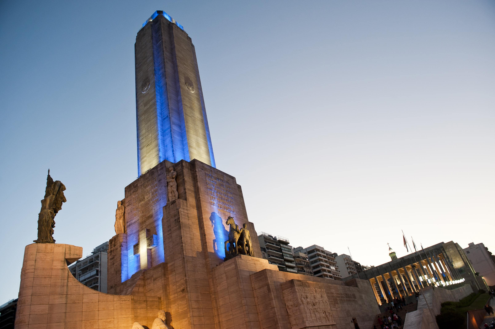
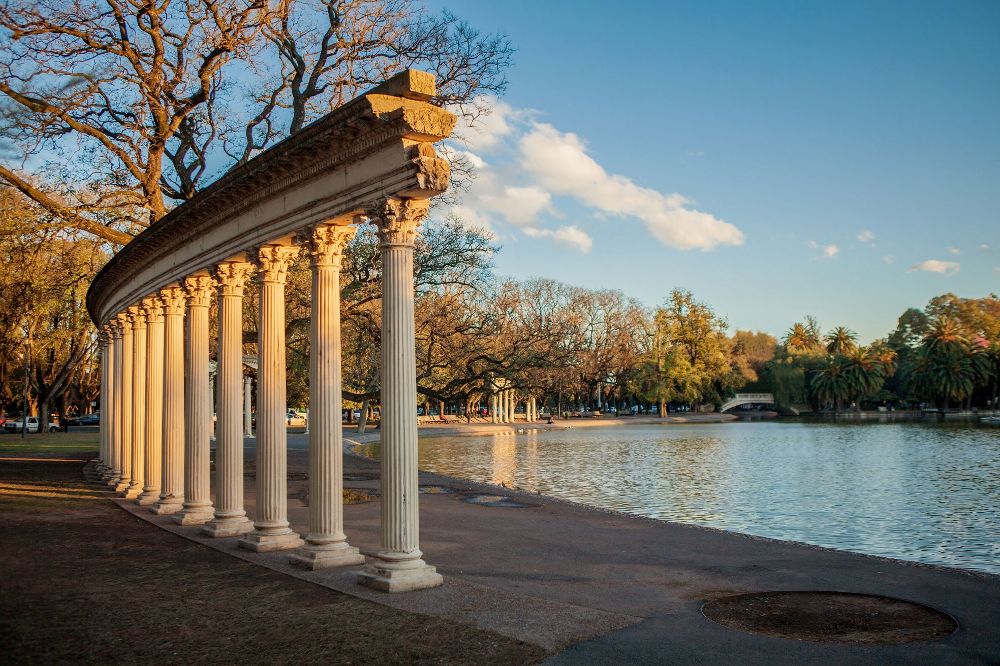
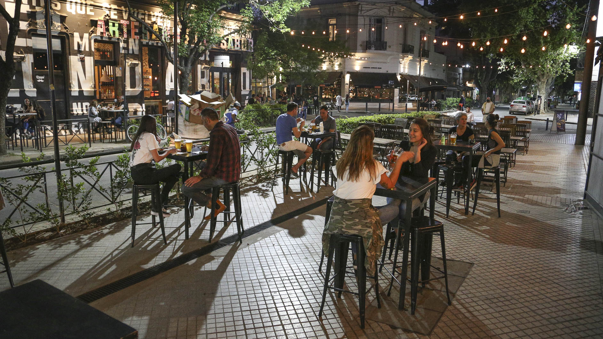

RosTourist: Lugares para visitar
Acá te dejamos una lista de los lugares más icónicos de la ciudad que no te pueden faltar en tu visita!
Monumento a la bandera
El gran y emblemático monumento a la bandera argentina es algo que cualquier turista va a querer conocer.
Parque Independencia
El Parque Independencia es el pulmón de la ciudad, muy bello y digno de visitar. Con muchos colores naturales a la vista.
Pichincha
En barrio Pichincha podrás encontrarte con muchas cervecerías, heladerías y parrillas frecuentemente visitadas en horarios nocturnos.